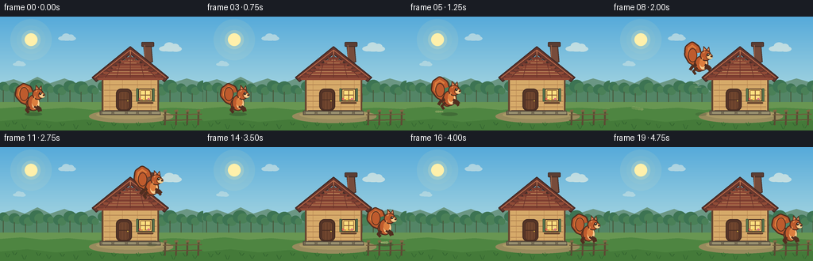
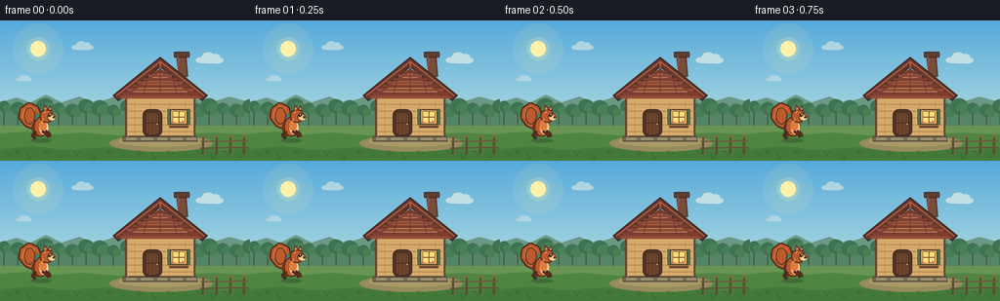
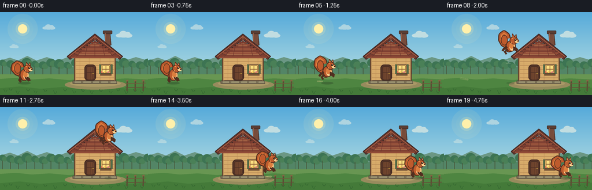
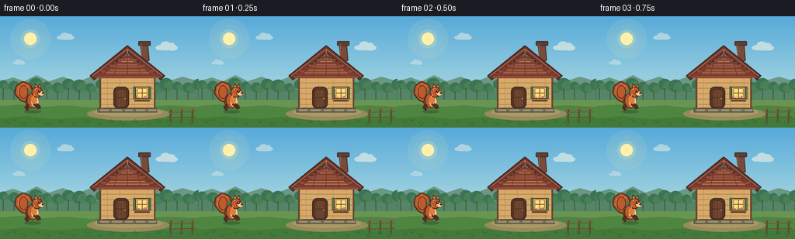

CODING AGENTS AS PIXEL WORLD MODELS
traex/DeepSeek-V4.1-Flash · dynamic_spatial_relationship_0024
点击播放 · 原生 RGB 像素
逐轮保存的候选
回放视频、检查图与代码变化。
每份候选均可单独播放。实际图片检查记录在下方工具轨迹中。
候选 01播放与检查图
点击播放 · 原生 RGB 像素


展开代码变化
--- 上一保存版本
+++ 本次保存版本
@@ -0,0 +1,444 @@
+from pathlib import Path
+
+import numpy as np
+from PIL import Image, ImageDraw
+
+import artifact_io
+
+
+WIDTH = 256
+HEIGHT = 144
+FRAMES = 20
+SS = 4
+
+
+def scaled(value):
+ return int(round(value * SS))
+
+
+def point(x, y):
+ return scaled(x), scaled(y)
+
+
+def box(x0, y0, x1, y1):
+ return scaled(x0), scaled(y0), scaled(x1), scaled(y1)
+
+
+def polygon(draw, points, fill, outline=None, width=1):
+ draw.polygon([point(x, y) for x, y in points], fill=fill)
+ if outline is not None:
+ draw.line(
+ [point(x, y) for x, y in points] + [point(*points[0])],
+ fill=outline,
+ width=scaled(width),
+ joint="curve",
+ )
+
+
+def ellipse(draw, x, y, rx, ry, fill, outline=None, width=1):
+ draw.ellipse(
+ box(x - rx, y - ry, x + rx, y + ry),
+ fill=fill,
+ outline=outline,
+ width=scaled(width),
+ )
+
+
+def rounded_rect(draw, x0, y0, x1, y1, radius, fill, outline=None, width=1):
+ draw.rounded_rectangle(
+ box(x0, y0, x1, y1),
+ radius=scaled(radius),
+ fill=fill,
+ outline=outline,
+ width=scaled(width),
+ )
+
+
+def line(draw, points, fill, width=1):
+ draw.line(
+ [point(x, y) for x, y in points],
+ fill=fill,
+ width=scaled(width),
+ joint="curve",
+ )
+
+
+def make_sky():
+ height = HEIGHT * SS
+ width = WIDTH * SS
+ y = np.linspace(0.0, 1.0, height, dtype=np.float32)[:, None, None]
+ top = np.array([86, 170, 218], dtype=np.float32)
+ middle = np.array([161, 211, 224], dtype=np.float32)
+ horizon = np.array([249, 220, 166], dtype=np.float32)
+
+ lower_mix = np.clip(y / 0.64, 0.0, 1.0)
+ upper = top * (1.0 - lower_mix) + middle * lower_mix
+ horizon_mix = np.clip((y - 0.64) / 0.36, 0.0, 1.0)
+ rgb = upper * (1.0 - horizon_mix) + horizon * horizon_mix
+ rgb = np.broadcast_to(rgb, (height, width, 3)).astype(np.uint8)
+ return Image.fromarray(rgb, "RGB")
+
+
+def draw_cloud(draw, x, y, scale=1.0, alpha=150):
+ color = (255, 249, 230, alpha)
+ ellipse(draw, x, y, 13 * scale, 4.4 * scale, color)
+ ellipse(draw, x - 8 * scale, y + 0.6 * scale, 7 * scale, 3.4 * scale, color)
+ ellipse(draw, x + 8 * scale, y + 0.8 * scale, 8 * scale, 3.8 * scale, color)
+ ellipse(draw, x - 1 * scale, y - 3.3 * scale, 7 * scale, 4.8 * scale, color)
+ ellipse(draw, x + 7 * scale, y - 2.2 * scale, 5.4 * scale, 4.0 * scale, color)
+
+
+def draw_background():
+ base = make_sky()
+ glow = Image.new("RGBA", base.size, (0, 0, 0, 0))
+ gd = ImageDraw.Draw(glow)
+ for radius, alpha in ((26, 22), (18, 30), (12, 72), (8, 255)):
+ color = (255, 240, 171, alpha)
+ ellipse(gd, 39, 29, radius, radius, color)
+ base = Image.alpha_composite(base.convert("RGBA"), glow)
+
+ clouds = Image.new("RGBA", base.size, (0, 0, 0, 0))
+ cd = ImageDraw.Draw(clouds)
+ draw_cloud(cd, 84, 27, 0.72, 116)
+ draw_cloud(cd, 214, 40, 0.92, 140)
+ draw_cloud(cd, 24, 60, 0.52, 82)
+ base = Image.alpha_composite(base, clouds)
+
+ d = ImageDraw.Draw(base)
+
+ far_hills = [
+ (0, 94), (0, 84), (17, 79), (31, 84), (47, 76), (63, 84),
+ (81, 78), (99, 85), (117, 78), (138, 83), (156, 77),
+ (177, 84), (196, 79), (216, 84), (235, 78), (256, 84),
+ (256, 104), (0, 104),
+ ]
+ polygon(d, far_hills, (107, 151, 132))
+
+ mid_hills = [
+ (0, 103), (0, 93), (22, 88), (43, 94), (60, 89), (78, 96),
+ (99, 90), (122, 96), (145, 90), (169, 95), (193, 90),
+ (217, 96), (239, 90), (256, 94), (256, 114), (0, 114),
+ ]
+ polygon(d, mid_hills, (83, 133, 102))
+
+ # A distant tree line gives the small frame depth without competing with the hut.
+ for index, x in enumerate(range(4, 257, 14)):
+ crown_y = 88 + (index % 3) * 2
+ crown_r = 6 + (index % 4)
+ ellipse(d, x, crown_y, crown_r, crown_r * 0.92, (61, 116, 83))
+ ellipse(d, x + 4, crown_y + 2, crown_r * 0.75, crown_r * 0.7, (74, 128, 87))
+ line(d, [(x, crown_y + 5), (x, 108)], (73, 91, 62), 1.2)
+
+ # Ground planes.
+ polygon(d, [(0, 108), (256, 108), (256, 144), (0, 144)], (104, 150, 82))
+ polygon(
+ d,
+ [(0, 116), (27, 114), (55, 117), (86, 115), (119, 118),
+ (151, 115), (184, 117), (218, 115), (256, 117), (256, 144), (0, 144)],
+ (78, 133, 65),
+ )
+ polygon(
+ d,
+ [(0, 132), (34, 129), (70, 133), (108, 130), (146, 134),
+ (187, 130), (225, 133), (256, 131), (256, 144), (0, 144)],
+ (68, 122, 57),
+ )
+
+ # A soft dirt clearing centers the hut and catches its shadow.
+ ellipse(d, 165, 126, 53, 8.5, (151, 139, 93))
+ ellipse(d, 165, 124, 44, 5.4, (169, 153, 102))
+
+ return base.convert("RGB")
+
+
+def draw_hut(image):
+ overlay = Image.new("RGBA", image.size, (0, 0, 0, 0))
+ d = ImageDraw.Draw(overlay)
+
+ # Chimney sits behind the roof plane.
+ polygon(d, [(181, 37), (190, 34), (192, 57), (183, 60)], (119, 76, 59), (78, 52, 43), 1.2)
+ rounded_rect(d, 178, 32, 194, 38, 1.3, (91, 62, 52), (67, 46, 40), 1.0)
+ line(d, [(182, 36), (182, 56)], (154, 98, 72), 1.1)
+
+ # Walls and gable.
+ rounded_rect(d, 128, 72, 200, 122, 1.8, (214, 170, 105), (91, 65, 47), 1.4)
+ polygon(d, [(128, 76), (164, 50), (200, 76)], (226, 184, 118), (91, 65, 47), 1.4)
+
+ # Wall planks.
+ for y in (79, 86, 93, 100, 107, 114):
+ line(d, [(131, y), (197, y)], (170, 122, 75), 0.7)
+ for x in (138, 154, 173, 190):
+ line(d, [(x, 76), (x, 120)], (183, 136, 83), 0.55)
+
+ # Timber frame.
+ line(d, [(129, 76), (129, 120)], (103, 69, 47), 2.1)
+ line(d, [(199, 76), (199, 120)], (103, 69, 47), 2.1)
+ line(d, [(132, 76), (197, 76)], (102, 68, 47), 2.0)
+ line(d, [(132, 119), (197, 119)], (93, 61, 43), 2.0)
+ line(d, [(128, 78), (164, 52)], (94, 63, 45), 1.7)
+ line(d, [(164, 52), (200, 78)], (94, 63, 45), 1.7)
+
+ # Roof, with a warm highlight and alternating shingle courses.
+ polygon(
+ d,
+ [(116, 77), (164, 38), (212, 77), (207, 82), (164, 47), (121, 82)],
+ (103, 55, 45),
+ (66, 42, 38),
+ 1.5,
+ )
+ roof_left = 164
+ for i, y in enumerate(np.linspace(48, 77, 9)):
+ half = (y - 47) * 1.52
+ left = max(122, roof_left - half)
+ right = min(206, roof_left + half)
+ color = (145, 75, 55) if i % 2 == 0 else (126, 62, 49)
+ polygon(d, [(left, y), (right, y), (right - 1.3, y + 3.0), (left + 1.3, y + 3.0)], color)
+ for offset in (-35, -24, -13, 0, 13, 24, 35):
+ top_y = 48 + abs(offset) * 0.82
+ line(d, [(164 + offset, top_y), (164 + offset * 1.33, 77)], (105, 52, 44), 0.65)
+ line(d, [(119, 77), (164, 42), (209, 77)], (184, 104, 72), 1.0)
+ line(d, [(164, 43), (164, 48)], (198, 124, 84), 1.0)
+
+ # Foundation stones.
+ polygon(d, [(126, 119), (201, 119), (202, 124), (126, 124)], (120, 109, 84), (82, 73, 62), 1.0)
+ for x, w in ((128, 13), (143, 15), (160, 12), (174, 14), (190, 12)):
+ rounded_rect(d, x, 119.5, x + w, 123.6, 1.4, (154, 145, 112), (100, 91, 72), 0.7)
+
+ # Door.
+ rounded_rect(d, 146, 91, 166, 119, 6.2, (86, 53, 39), (66, 42, 34), 1.3)
+ rounded_rect(d, 149, 94, 163, 118, 4.2, (112, 69, 46), (75, 47, 36), 0.9)
+ for x in (152, 156, 160):
+ line(d, [(x, 96), (x, 117)], (92, 56, 39), 0.7)
+ line(d, [(150, 105), (162, 105)], (75, 46, 35), 0.9)
+ ellipse(d, 160.8, 106.4, 1.15, 1.15, (223, 176, 72), (91, 66, 35), 0.5)
+
+ # Window and shutters.
+ rounded_rect(d, 174, 91, 192, 107, 1.7, (244, 204, 112), (80, 54, 39), 1.2)
+ rounded_rect(d, 176.5, 93, 189.5, 105, 1.1, (255, 223, 128), (135, 88, 49), 0.7)
+ line(d, [(183, 93), (183, 105)], (131, 83, 47), 0.9)
+ line(d, [(176.5, 99), (189.5, 99)], (131, 83, 47), 0.9)
+ polygon(d, [(171.8, 91), (174, 91), (174, 107), (171.8, 107)], (91, 123, 80), (63, 83, 58), 0.8)
+ polygon(d, [(192, 91), (194.2, 91), (194.2, 107), (192, 107)], (91, 123, 80), (63, 83, 58), 0.8)
+ rounded_rect(d, 173, 108, 193, 110, 1.0, (122, 78, 49), (82, 55, 40), 0.7)
+
+ # Small window box flowers.
+ for x, color in ((176, (231, 103, 89)), (181, (255, 205, 85)), (187, (223, 108, 126))):
+ line(d, [(x, 107), (x, 104.8)], (64, 112, 57), 0.7)
+ ellipse(d, x, 104.1, 1.3, 1.3, color)
+
+ image = Image.alpha_composite(image.convert("RGBA"), overlay).convert("RGB")
+ return image
+
+
+def draw_foreground(image):
+ overlay = Image.new("RGBA", image.size, (0, 0, 0, 0))
+ d = ImageDraw.Draw(overlay)
+
+ # A weathered fence anchors the right edge while preserving room for the landing.
+ for x in (208, 222, 236, 250):
+ line(d, [(x, 119), (x - 0.6, 137)], (91, 75, 51), 2.2)
+ polygon(d, [(x - 2.3, 118), (x + 1.8, 117.2), (x + 2.3, 120), (x - 2.0, 120.5)], (126, 105, 68))
+ line(d, [(205, 124), (254, 123)], (112, 90, 60), 1.6)
+ line(d, [(205, 131), (254, 130)], (98, 79, 54), 1.4)
+
+ # Grass tufts are intentionally uneven to avoid a tiled, artificial look.
+ tufts = [
+ (9, 139, 5), (18, 136, 4), (30, 142, 6), (48, 137, 4),
+ (61, 141, 5), (78, 138, 4), (95, 142, 6), (112, 137, 4),
+ (128, 141, 5), (143, 138, 4), (158, 142, 6), (174, 138, 4),
+ (191, 141, 5), (204, 137, 4), (218, 142, 6), (233, 138, 4),
+ (245, 141, 5),
+ ]
+ for x, y, h in tufts:
+ line(d, [(x, y), (x - 2.4, y - h)], (54, 105, 50), 0.9)
+ line(d, [(x + 0.5, y), (x + 0.3, y - h - 1)], (66, 121, 55), 0.8)
+ line(d, [(x + 1, y), (x + 3.2, y - h + 1)], (50, 98, 47), 0.8)
+
+ image = Image.alpha_composite(image.convert("RGBA"), overlay).convert("RGB")
+ return image
+
+
+def squirrel_tail_points(sway, pose):
+ lift = -3.5 if pose in ("jump", "launch") else 0.0
+ return [
+ (-6.5, -14.5),
+ (-13.0 + sway * 0.35, -17.0 + lift * 0.2),
+ (-18.2 + sway, -23.0 + lift * 0.5),
+ (-17.2 + sway * 0.8, -29.5 + lift),
+ (-12.2 + sway * 0.45, -33.0 + lift),
+ (-6.5 + sway * 0.1, -30.5 + lift * 0.65),
+ (-5.0, -26.0 + lift * 0.3),
+ ]
+
+
+def draw_squirrel(image, x, ground_y, jump, pose, facing=1, tail_sway=0.0):
+ overlay = Image.new("RGBA", image.size, (0, 0, 0, 0))
+ d = ImageDraw.Draw(overlay)
+
+ # A compact local transform keeps all anatomy readable at 256x144.
+ def tx(lx, ly):
+ return x + lx * facing, ground_y - jump + ly
+
+ outline = (81, 46, 31)
+ fur = (190, 91, 45)
+ fur_light = (220, 126, 62)
+ fur_shadow = (150, 65, 35)
+ cream = (248, 205, 142)
+
+ tail = [tx(px, py) for px, py in squirrel_tail_points(tail_sway, pose)]
+ line(d, tail, outline, 10.6)
+ line(d, tail, fur, 7.2)
+ line(d, tail[1:-1], fur_light, 2.2)
+ ellipse(d, *tx(-11.8 + tail_sway * 0.5, -24.2), 5.8, 8.8, fur, outline, 1.0)
+
+ # Shadowed hindquarter and body.
+ if pose == "crouch":
+ body_x, body_y = 0.0, -10.8
+ body_rx, body_ry = 8.5, 10.0
+ elif pose in ("jump", "launch"):
+ body_x, body_y = 0.5, -14.0
+ body_rx, body_ry = 8.6, 9.7
+ else:
+ body_x, body_y = 0.0, -13.0
+ body_rx, body_ry = 7.7, 10.2
+
+ ellipse(d, *tx(-2.5, -11.2), 7.0, 8.0, fur_shadow, outline, 0.9)
+ ellipse(d, *tx(body_x, body_y), body_rx, body_ry, fur, outline, 1.25)
+ ellipse(d, *tx(2.7, body_y + 0.7), 4.7, 7.0, cream)
+ ellipse(d, *tx(1.7, body_y - 1.1), 3.8, 5.6, fur_light)
+
+ # Limbs change silhouette between the crouch, airborne, and landing poses.
+ if pose == "crouch":
+ line(d, [tx(-5.8, -8.0), tx(-8.4, -3.5), tx(-4.8, -1.0)], outline, 3.6)
+ line(d, [tx(4.0, -8.8), tx(8.0, -6.0), tx(10.0, -3.0)], outline, 3.2)
+ elif pose in ("jump", "launch"):
+ line(d, [tx(-5.8, -12.5), tx(-11.0, -10.0), tx(-14.0, -5.5)], outline, 3.8)
+ line(d, [tx(-5.0, -8.8), tx(-9.8, -4.0), tx(-7.0, 0.0)], outline, 3.3)
+ line(d, [tx(4.5, -12.0), tx(9.8, -10.0), tx(12.5, -7.0)], outline, 3.2)
+ line(d, [tx(4.5, -9.0), tx(9.3, -7.3), tx(11.2, -4.5)], outline, 2.9)
+ else:
+ line(d, [tx(-5.6, -8.5), tx(-8.8, -4.0), tx(-5.7, -0.8)], outline, 3.8)
+ line(d, [tx(4.3, -9.0), tx(8.2, -6.5), tx(9.2, -2.4)], outline, 3.1)
+ line(d, [tx(1.0, -8.5), tx(5.2, -5.5), tx(7.5, -2.0)], outline, 2.8)
+
+ # Head, muzzle, ears, eye, and whiskers.
+ head_y = -24.0 if pose != "crouch" else -21.0
+ ellipse(d, *tx(5.6, head_y), 7.2, 7.0, fur, outline, 1.15)
+ ellipse(d, *tx(10.3, head_y + 1.2), 4.3, 3.7, fur_light, outline, 0.8)
+ ellipse(d, *tx(11.1, head_y + 2.1), 3.2, 2.3, cream)
+ ellipse(d, *tx(12.8, head_y + 1.3), 1.15, 1.0, (54, 37, 29))
+
+ polygon(d, [tx(2.7, head_y - 5.1), tx(3.1, head_y - 11.4), tx(7.2, head_y - 7.0)], fur, outline, 0.8)
+ polygon(d, [tx(7.0, head_y - 6.5), tx(9.7, head_y - 10.7), tx(10.7, head_y - 5.6)], fur, outline, 0.8)
+ polygon(d, [tx(3.5, head_y - 6.3), tx(3.7, head_y - 9.1), tx(5.7, head_y - 7.2)], (225, 147, 104))
+ polygon(d, [tx(7.8, head_y - 7.0), tx(9.4, head_y - 9.2), tx(9.8, head_y - 6.5)], (225, 147, 104))
+
+ ellipse(d, *tx(8.7, head_y - 1.0), 1.65, 1.8, (45, 32, 27))
+ ellipse(d, *tx(9.05, head_y - 1.45), 0.48, 0.48, (255, 245, 210))
+ line(d, [tx(12.4, head_y + 0.9), tx(15.0, head_y + 0.2)], (92, 62, 44), 0.45)
+ line(d, [tx(12.4, head_y + 1.5), tx(14.8, head_y + 2.2)], (92, 62, 44), 0.45)
+
+ # Tiny highlights keep the warm fur from flattening.
+ line(d, [tx(1.0, -17.5), tx(2.2, -21.8)], (233, 154, 86), 1.0)
+ line(d, [tx(3.0, head_y - 3.1), tx(4.5, head_y - 5.0)], (242, 170, 99), 0.7)
+
+ image = Image.alpha_composite(image.convert("RGBA"), overlay).convert("RGB")
+ return image
+
+
+def draw_ground_effects(image, x, jump, frame):
+ overlay = Image.new("RGBA", image.size, (0, 0, 0, 0))
+ d = ImageDraw.Draw(overlay)
+
+ shadow_width = 11.0 - min(jump, 62.0) * 0.075
+ shadow_alpha = int(100 - min(jump, 62.0) * 0.85)
+ ellipse(d, x, 123.2, shadow_width, 2.2, (43, 66, 39, shadow_alpha))
+
+ if 5 <= frame <= 10:
+ age = frame - 5
+ for index in range(4):
+ px = 45 - age * (1.6 + index * 0.35) - index * 2.4
+ py = 120 - age * (1.0 + index * 0.2)
+ radius = 1.2 + age * 0.28 + index * 0.2
+ alpha = max(0, 105 - age * 14 - index * 9)
+ ellipse(d, px, py, radius, radius * 0.72, (224, 205, 145, alpha))
+
+ if 14 <= frame <= 18:
+ age = frame - 14
+ for index in range(5):
+ direction = -1 if index < 2 else 1
+ px = 228 + direction * age * (1.8 + index * 0.35) + (index - 2) * 1.5
+ py = 120.5 - age * (0.9 + (index % 2) * 0.45)
+ radius = 1.4 + age * 0.32 + index * 0.15
+ alpha = max(0, 120 - age * 16 - index * 7)
+ ellipse(d, px, py, radius, radius * 0.7, (230, 210, 151, alpha))
+
+ if 7 <= frame <= 13:
+ # Two restrained speed marks reinforce direction without hiding the squirrel.
+ sx = [93, 120, 147, 173, 198, 218, 231][frame - 7]
+ sy = [96, 82, 68, 57, 54, 63, 88][frame - 7]
+ line(d, [(sx - 15, sy + 2), (sx - 8, sy + 2)], (255, 242, 206, 92), 0.8)
+ line(d, [(sx - 13, sy + 7), (sx - 5, sy + 7)], (255, 242, 206, 66), 0.65)
+
+ image = Image.alpha_composite(image.convert("RGBA"), overlay).convert("RGB")
+ return image
+
+
+def squirrel_state(frame):
+ x_values = [
+ 42.0, 42.3, 42.8, 43.7, 45.0,
+ 54.0, 70.0, 91.0, 115.0, 141.0,
+ 167.0, 191.0, 210.0, 223.0, 229.0,
+ 230.0, 229.3, 228.8, 228.4, 228.0,
+ ]
+ heights = [
+ 0.0, 0.0, 0.0, 0.0, 0.0,
+ 5.0, 18.0, 34.0, 49.0, 59.0,
+ 62.0, 57.0, 44.0, 27.0, 8.0,
+ 0.0, 0.0, 0.0, 0.0, 0.0,
+ ]
+
+ if frame <= 3:
+ pose = "stand"
+ elif frame == 4:
+ pose = "crouch"
+ elif frame <= 6:
+ pose = "launch"
+ elif frame <= 13:
+ pose = "jump"
+ elif frame == 14:
+ pose = "land"
+ else:
+ pose = "stand"
+
+ tail_sway = 1.2 * np.sin(frame * 0.9)
+ if pose in ("jump", "launch"):
+ tail_sway += 1.0
+ return x_values[frame], heights[frame], pose, tail_sway
+
+
+def generate_frames():
+ scene = draw_background()
+ scene = draw_hut(scene)
+ scene = draw_foreground(scene)
+
+ frames = []
+ for frame in range(FRAMES):
+ image = scene.copy()
+ x, jump, pose, tail_sway = squirrel_state(frame)
+ image = draw_ground_effects(image, x, jump, frame)
+ image = draw_squirrel(image, x, 122.0, jump, pose, facing=1, tail_sway=tail_sway)
+ image = image.resize((WIDTH, HEIGHT), Image.Resampling.LANCZOS)
+ frames.append(np.asarray(image, dtype=np.uint8))
+ return np.stack(frames)
+
+
+def main():
+ case_dir = Path(__file__).resolve().parent
+ frames = generate_frames()
+ artifact_io.save(frames, case_dir)
+ print(f"Generated {len(frames)} frames at {WIDTH}x{HEIGHT} ({FRAMES / 4.0:.1f}s)")
+
+
+if __name__ == "__main__":
+ main()
候选 02播放与检查图
点击播放 · 原生 RGB 像素


展开代码变化
--- 上一保存版本
+++ 本次保存版本
@@ -235,11 +235,11 @@
d = ImageDraw.Draw(overlay)
# A weathered fence anchors the right edge while preserving room for the landing.
- for x in (208, 222, 236, 250):
+ for x in (220, 234, 248):
line(d, [(x, 119), (x - 0.6, 137)], (91, 75, 51), 2.2)
polygon(d, [(x - 2.3, 118), (x + 1.8, 117.2), (x + 2.3, 120), (x - 2.0, 120.5)], (126, 105, 68))
- line(d, [(205, 124), (254, 123)], (112, 90, 60), 1.6)
- line(d, [(205, 131), (254, 130)], (98, 79, 54), 1.4)
+ line(d, [(217, 124), (252, 123)], (112, 90, 60), 1.6)
+ line(d, [(217, 131), (252, 130)], (98, 79, 54), 1.4)
# Grass tufts are intentionally uneven to avoid a tiled, artificial look.
tufts = [
@@ -367,7 +367,7 @@
age = frame - 14
for index in range(5):
direction = -1 if index < 2 else 1
- px = 228 + direction * age * (1.8 + index * 0.35) + (index - 2) * 1.5
+ px = 209 + direction * age * (1.8 + index * 0.35) + (index - 2) * 1.5
py = 120.5 - age * (0.9 + (index % 2) * 0.45)
radius = 1.4 + age * 0.32 + index * 0.15
alpha = max(0, 120 - age * 16 - index * 7)
@@ -388,8 +388,8 @@
x_values = [
42.0, 42.3, 42.8, 43.7, 45.0,
54.0, 70.0, 91.0, 115.0, 141.0,
- 167.0, 191.0, 210.0, 223.0, 229.0,
- 230.0, 229.3, 228.8, 228.4, 228.0,
+ 166.0, 187.0, 201.0, 208.0, 210.0,
+ 210.0, 209.6, 209.2, 209.0, 209.0,
]
heights = [
0.0, 0.0, 0.0, 0.0, 0.0,
可观测工具轨迹
实际执行的命令与返回图片。
命令 1exit 0
/bin/bash -c "pwd && rg --files -g 'prompt.txt' -g 'GENERATION_RULES.md' -g 'task_spec.json' -g '"'!**/.git/**'"'"
命令 2exit 0
/bin/bash -c "ls -la && find . -maxdepth 2 -type f -not -path './.git/*' -printf '%p %s bytes\\n' | sort | head -200"
命令 3exit 0
/bin/bash -c 'command -v ffmpeg || true; command -v python3 || true; python3 --version 2>/dev/null || true; ffmpeg -version 2>/dev/null | head -3 || true'
命令 4exit 0
/bin/bash -c 'cat prompt.txt'
命令 5exit 0
/bin/bash -c 'cat GENERATION_RULES.md'
命令 6exit 0
/bin/bash -c "cat task_spec.json && printf '\\n' && sed -n '1,240p' artifact_io.py"
命令 7exit 0
/bin/bash -c 'python3 generate.py'
命令 8exit 0
/bin/bash -c 'command -v chafa || true; command -v viu || true; command -v jp2 || true; command -v img2txt || true; command -v ffmpeg || true; command -v convert || true'
命令 9exit 0
/bin/bash -c "find . -maxdepth 2 -type f -not -path './.git/*' -printf '%p %s bytes\\n' | sort"
命令 10exit 0
/bin/bash -c "python3 - <<'PY'
import numpy as np
from PIL import Image
p=np.load('pixels.npz')['pixels']
print('tensor', p.shape, p.dtype, 'min/max', p.min(), p.max())
frames=[]
for t in range(p.shape[2]):
rgb=np.stack(((p[:,:,t]>>16)&255,(p[:,:,t]>>8)&255,p[:,:,t]&255),axis=-1).astype(np.uint8)
frames.append(rgb)
print(t, 'mean', np.round(rgb.mean((0,1)),1), 'unique', len(np.unique(rgb.reshape(-1,3),axis=0)))
# Squirrel orange segmentation in warm hut region is tricky, but report x extents by frame.
for t,rgb in enumerate(frames):
r,g,b=rgb[:,:,0].astype(int),rgb[:,:,1].astype(int),rgb[:,:,2].astype(int)
mask=(r>145)&(r>g+45)&(g>b+15)&(r<245)&(b<115)
ys,xs=np.where(mask)
# exclude window/roof/yellow by focus x<210 or x>205 final
print('orange',t, (int(xs.min()),int(xs.max()),int(ys.min()),int(ys.max())) if len(xs) else None)
PY"命令 11exit 0
/bin/bash -c "python3 - <<'PY'
from PIL import Image
import numpy as np
for fi in (0, 4, 8, 10, 14, 19):
a=np.asarray(Image.open(f'frames/{fi:02d}.png')).astype(int)
# Crop around moving squirrel and hut, 2x2 aggregation nearest sample.
print('\\nFRAME', fi)
for y in range(18, 126, 3):
row=''
for x in range(12, 248, 2):
r,g,b=a[y:y+3,x:x+2].mean((0,1))
if r>160 and r>g+35 and g>b+10 and b<135: c='O'
elif r<105 and g<75 and b<60: c='#'
elif r>215 and g>170 and b<155: c='w'
elif r>125 and g>90 and b<90: c='h'
elif g>r+5 and g>b+8: c=','
elif b>g+5 and b>r+10: c='.'
elif r>220 and g>210 and b>175: c='C'
else: c=' '
row+=c
print(row.rstrip())
PY"命令 12exit 0
/bin/bash -c 'mkdir -p .tmp/candidate_01 && cp -r frames inspection.png transition_check.png pixels.npz index.html .tmp/candidate_01/'
命令 13exit 0
/bin/bash -c 'python3 generate.py'
命令 14exit 0
/bin/bash -c "python3 - <<'PY'
from PIL import Image
import numpy as np
# Check clean visual separation in final frame by reporting nearest non-ground color in a corridor around squirrel.
a=np.asarray(Image.open('frames/19.png')).astype(int)
for x in range(203, 219):
col=a[:,x]
# report dark pixels and saturated orange pixels per column
dark=np.sum((col[:,0]<105)&(col[:,1]<80)&(col[:,2]<70))
orange=np.sum((col[:,0]>150)&(col[:,0]>col[:,1]+40)&(col[:,2]<120))
print(x, 'dark',dark,'orange',orange)
print('sequence file sizes:')
PY
ls -l frames/19.png inspection.png transition_check.png index.html pixels.npz"命令 15exit 0
/bin/bash -c "python3 - <<'PY'
from PIL import Image
import numpy as np
for fi in (0,5,8,10,12,14,19):
a=np.asarray(Image.open(f'frames/{fi:02d}.png')).astype(int)
print('\\nFRAME',fi)
for y in range(17,126,3):
row=''
for x in range(12,248,2):
r,g,b=a[y:y+3,x:x+2].mean((0,1))
if r>160 and r>g+35 and g>b+10 and b<135: c='O'
elif r<105 and g<75 and b<60: c='#'
elif r>215 and g>170 and b<155: c='w'
elif r>125 and g>90 and b<90: c='h'
elif g>r+5 and g>b+8: c=','
elif b>g+5 and b>r+10: c='.'
elif r>220 and g>210 and b>175: c='C'
else: c=' '
row+=c
print(row.rstrip())
PY"命令 16exit 0
/bin/bash -c "sed -n '1,240p' player_template.html"
命令 17exit 0
/bin/bash -c "python3 - <<'PY'
mods=['imageio','cv2','av','moviepy','numpy','PIL']
for m in mods:
try:
mod=__import__(m)
print(m, 'available', getattr(mod,'__version__',''))
except Exception as e:
print(m, 'missing', type(e).__name__)
PY"命令 18exit 0
/bin/bash -c "git status --short 2>/dev/null || true; du -sh .; find .tmp/candidate_01 -maxdepth 1 -type f -printf '%f %s\\n' | sort"
命令 19exit 0
/bin/bash -c "python3 - <<'PY'
import base64, json, re
from pathlib import Path
import numpy as np
from PIL import Image
html=Path('index.html').read_text()
m=re.search(r\"const DATA=(\\{.*?\\}),W=\", html, re.S)
assert m, 'embedded DATA missing'
data=json.loads(m.group(1))
assert (data['width'],data['height'],data['frames'],data['fps'])==(256,144,20,4.0)
def unpack(s):
return np.frombuffer(base64.b64decode(s), dtype='<u4').copy()
frames=[unpack(data['first'])]
for encoded in data['deltas']:
cur=frames[-1].copy(); p=unpack(encoded); i=0
while i<len(p):
start,count=int(p[i]),int(p[i+1]); i+=2
cur[start:start+count]=p[i:i+count]; i+=count
frames.append(cur)
assert len(frames)==20 and all(f.size==256*144 for f in frames)
reference=np.load('pixels.npz')['pixels']
for i,f in enumerate(frames):
decoded=f.reshape(144,256)
assert np.array_equal(decoded, reference[:,:,i]), i
png=np.asarray(Image.open(f'frames/{i:02d}.png'))
png_packed=(png[:,:,0].astype(np.uint32)<<16)|(png[:,:,1].astype(np.uint32)<<8)|png[:,:,2]
assert np.array_equal(png_packed, decoded), i
# Motion sanity: squirrel's left/right endpoints and non-static frames.
diffs=[int(np.count_nonzero(reference[:,:,i]"'!=reference[:,:,i-1])) for i in range(1,20)]
assert min(diffs)>0 and max(diffs)>3000
print('"'artifact reconstruction: OK')
print('deltas reconstruct 20/20 frames and match PNGs')
print('changed pixels per transition:', diffs)
print('caption:', data['caption'])
PY"命令 20exit 0
/bin/bash -c "python3 - <<'PY'
from pathlib import Path
import hashlib
import numpy as np
from PIL import Image
root=Path('.')
expected=[f'frames/{i:02d}.png' for i in range(20)]+['pixels.npz','inspection.png','transition_check.png','index.html','generate.py']
for rel in expected:
p=root/rel
assert p.is_file() and p.stat().st_size>0, rel
frames=[np.asarray(Image.open(p)) for p in sorted((root/'frames').glob('*.png'))]
assert len(frames)==20 and all(a.shape==(144,256,3) and a.dtype==np.uint8 for a in frames)
# ensure start and final composition are meaningfully different
start,end=frames[0].astype(int),frames[-1].astype(int)
print('files:',len(expected),'required artifacts present')
print('frame range:',frames[0].shape,len(frames),'mean start/end L1:',round(np.abs(start-end).mean(),2))
print('sha256 pixels:',hashlib.sha256((root/'pixels.npz').read_bytes()).hexdigest())
PY"命令 21exit 0
/bin/bash -c "cp pixels.npz .tmp/pixels_before_rerun.npz && python3 generate.py && python3 - <<'PY'
import numpy as np
before=np.load('.tmp/pixels_before_rerun.npz')['pixels']
after=np.load('pixels.npz')['pixels']
assert np.array_equal(before,after)
print('deterministic rerun: OK')
PY"命令 22exit 0
/bin/bash -c "python3 - <<'PY'
import base64, json, re
from pathlib import Path
import numpy as np
from PIL import Image
html=Path('index.html').read_text()
data=json.loads(re.search(r\"const DATA=(\\{.*?\\}),W=\",html,re.S).group(1))
def u(s): return np.frombuffer(base64.b64decode(s),dtype='<u4').copy()
f=[u(data['first'])]
for enc in data['deltas']:
n=f[-1].copy(); p=u(enc); i=0
while i<len(p):
a,c=int(p[i]),int(p[i+1]); i+=2; n[a:a+c]=p[i:i+c]; i+=c
f.append(n)
ref=np.load('pixels.npz')['pixels']
assert len(f)==20 and all(np.array_equal(x.reshape(144,256),ref[:,:,i]) for i,x in enumerate(f))
print('final reconstruction: OK')
print('dimensions: 256x144, frames: 20, fps: 4, duration: 5s')
PY"保存候选 2 份；完成命令 22 次；可验证图片返回 0 张。原始 API 响应与完整日志保留在本地。